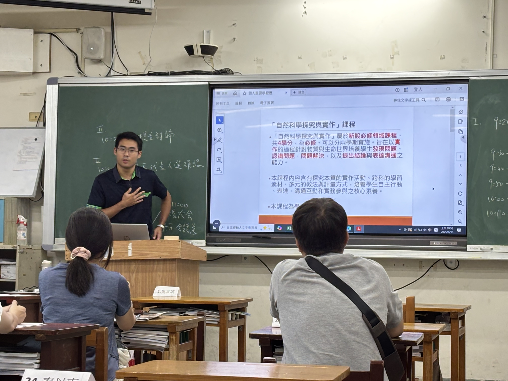
家長日報告探究與實作課程內容。2025/9/13
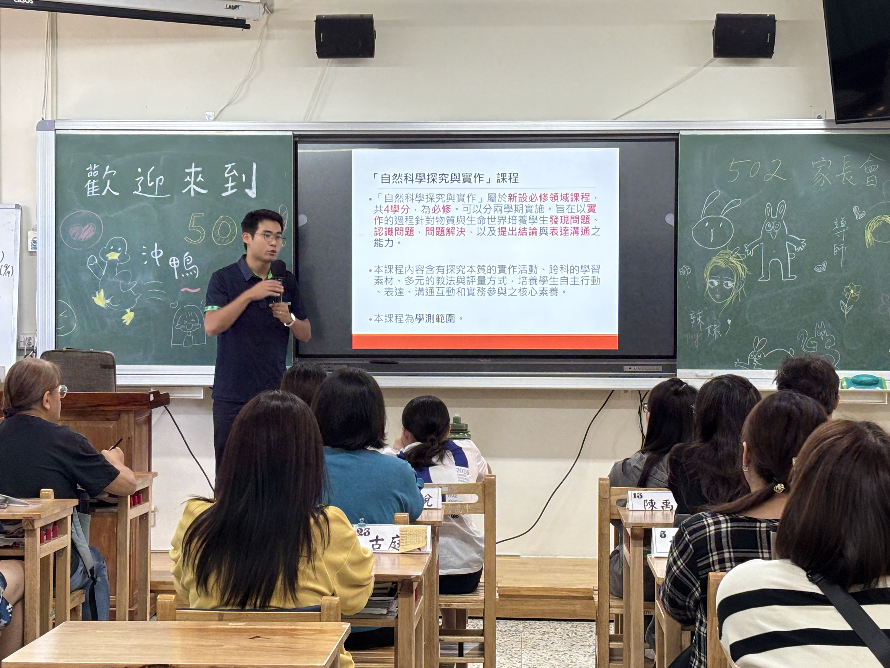
家長日報告探究與實作課程內容。2025/9/13
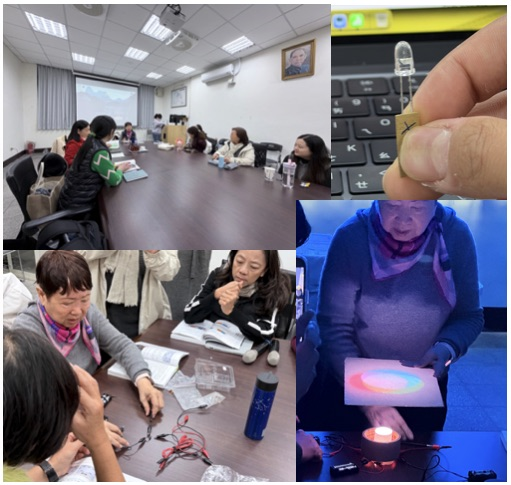
參加新竹國際教育輔導團的研習，主要內容為雙語的半導體相關課程，新竹市政府預計將半導體課程從國小端垂直串聯到高中端。2026/1/21
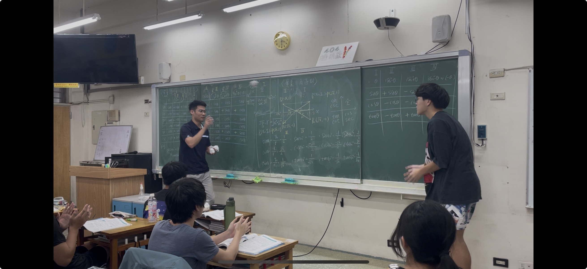
高一物理課，都卜勒效應章節。以丟紙球的方式，模擬聲波抵達觀察者，或是聲源發出聲音的效果。配合台下同學的擊掌，用實際的擊掌頻率模仿聲波的頻率。2026/5/19
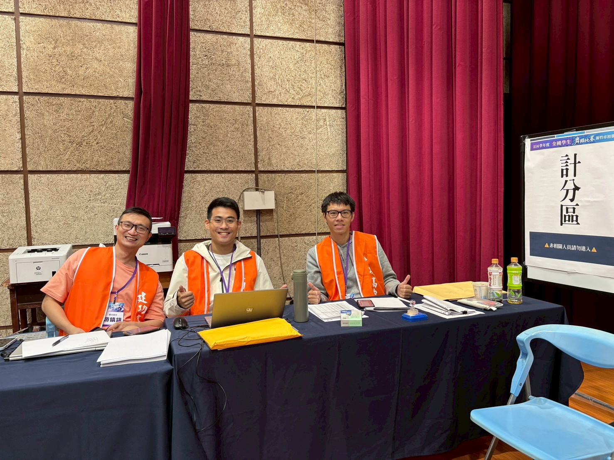
新竹市舞蹈大賽在建功，協助舞蹈大賽的工作畫面，我為印製獎狀組，身旁有設備組長游鎮翃（左），以及歷史代理徐健堯老師（右）。2025/11
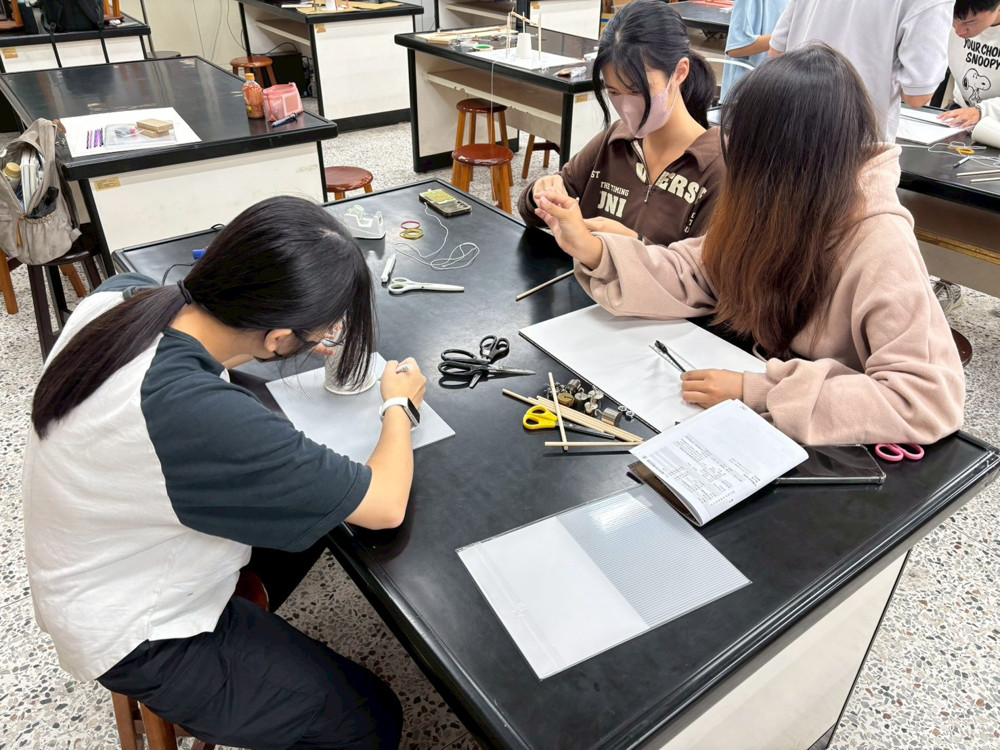
校內遠哲科學競賽，製作競賽道具的過程紀錄。學生正在製作達文西飛擺鐘，利用麻繩、竹筷製作懸臂，並且用紙杯製作底座。2025/10/23
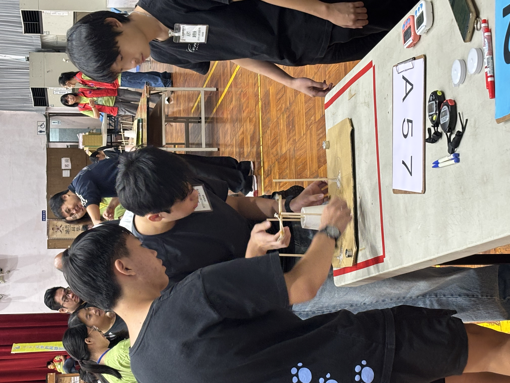
北區遠哲科學競賽（位於台師大），進行達文西飛擺鐘的正式競賽計時過程。此為奇異果小隊的照片。2025/10/26
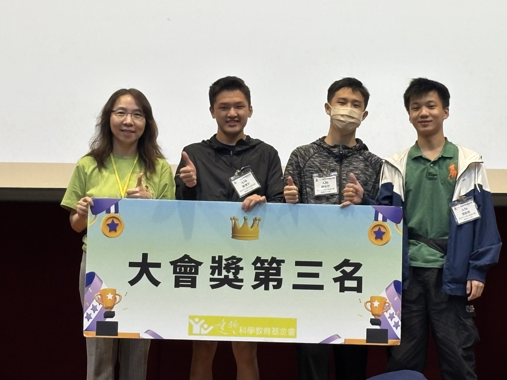
北區遠哲科學競賽（位於台師大），高二組——春風吹又生榮獲北區第三名。2025/10/26
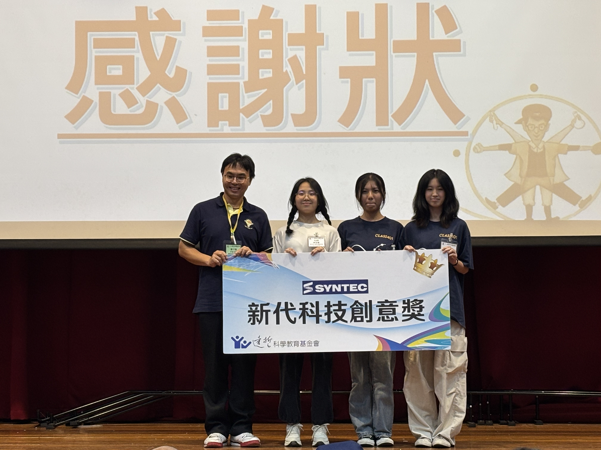
北區遠哲科學競賽（位於台師大），高二組——Mikrokomos榮獲北區新代科技創意獎。2025/10/26
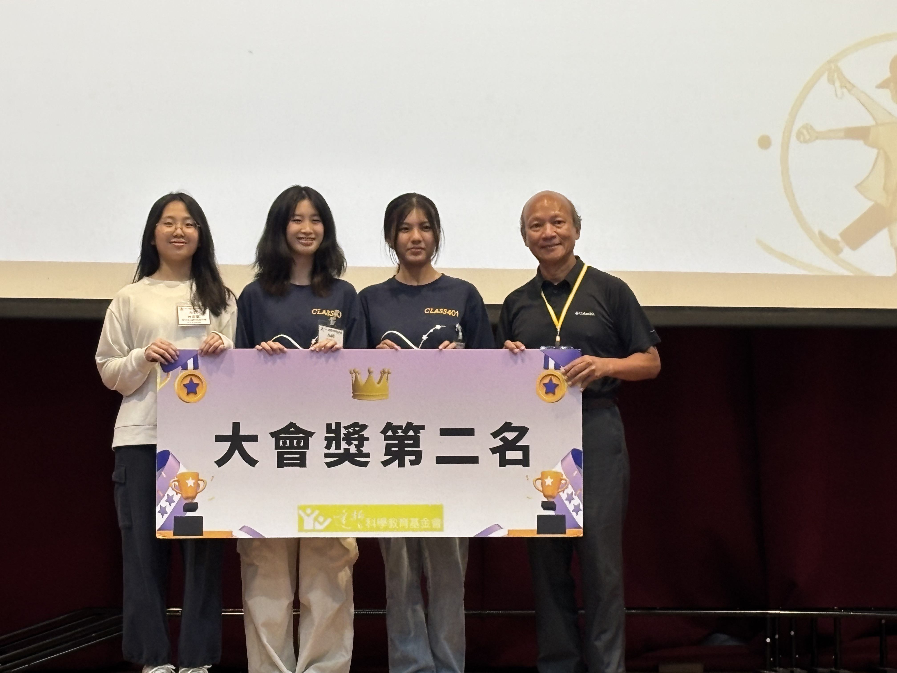
北區遠哲科學競賽（位於台師大），高二組——Mikrokomos榮獲北區第二名。2025/10/26
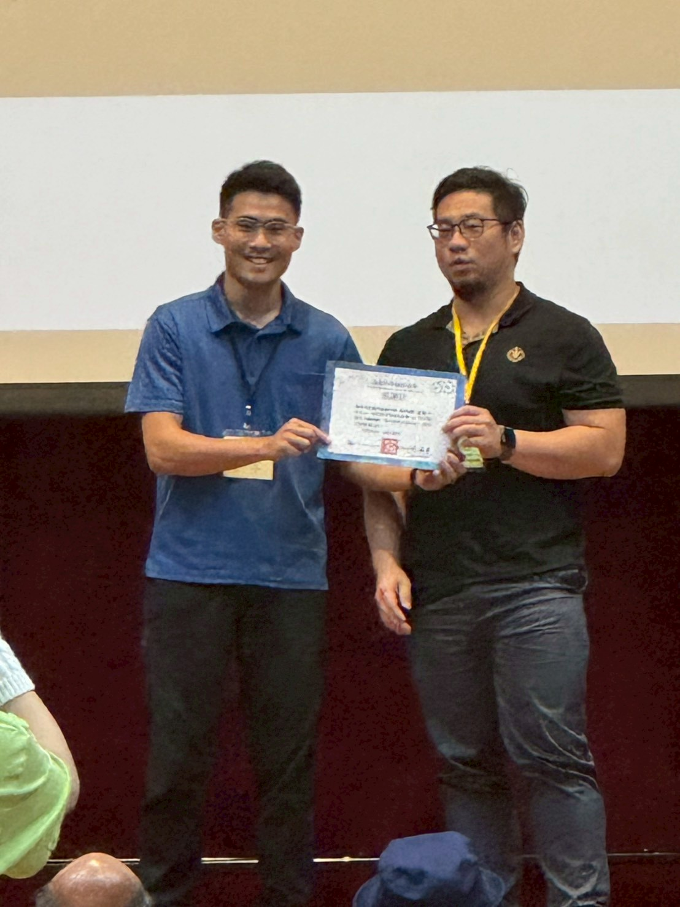
北區遠哲科學競賽（位於台師大），我（呂昀修）被大會拐上去代表授獎（www）。2025/10/26
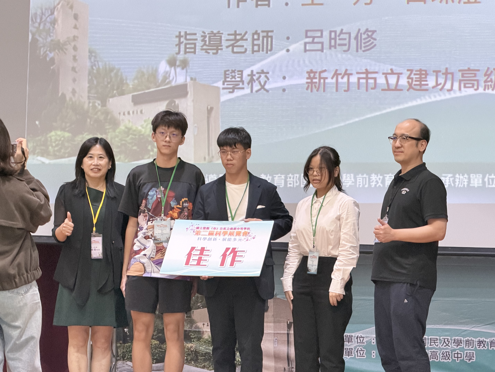
北二區科展（位於竹南高中），高二學生獲得北二區佳作，表情看起來沒有很開心（www）。2026/4/22